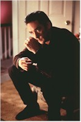
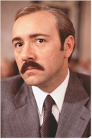
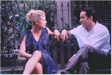

Contents | Features | Reviews | News | Archives | Store |
 |
|
| Movie Credits | Buy It! |
Midnight in the Garden
of Good and Evil
Review by Carrie
Gorringe
Posted 21 November 1997
| Directed by Clint Eastwood Starring
Kevin Spacey, John Cusack, Screenplay by John Lee Hancock, |
New York writer John Kelso (Cusack) has been sent to Savannah, GA as a representative of Town and Country magazine to cover the annual Christmas party of Jim Williams (Spacey), the city’s leading antique dealer and bon vivant. In a voice-over at the film’s beginning, it is explained that Savannah was the only city in General Sherman’s Civil War "tour" to be spared the general looting and torching so well-known and bitterly remembered by the occupants of, say, Atlanta. Apparently, the hard-bitten Bill T. was so charmed by the hospitality of the Savannah denizens that he couldn’t bring himself to demonstrate to them why war was hell. Kelso is about to find himself in a similar state of beguilement; even a jaded New York writer is no match for the subtle and constant social charm exuded by this Southern city. The Spanish moss and all that conviviality just keeps him in a whirl. Not only Williams, but the alluring Mandy Nicholls (A. Eastwood) and the dry wit of the disbarred barrister, Joe Odom (Hipp), keep him spinning along. Then there’s Chablis Deveau (The Lady Chablis), a scintillating transsexual whose nightly stage appearances have made her the self-anointed, all-seeing wit of Savannah. When Kelso describes the atmosphere as "Gone with the Wind on mescaline," his perceptions are apt. The world in which Kelso finds himself does indeed possess a singularly hallucinatory quality. The traps aren’t obvious until you’re slipping under the surface for the third time. To call such charm "insidious" might be inaccurate, but this Savannah is no place for the overly and ignorantly confident.
Under the circumstances, Kelso is in no condition to resist when Williams is accused of murdering his lover, a hot-tempered lowlife named Billy Hanson (Law). He immediately leaps to Williams’ defense, offering to act as the research department for Williams’ lawyer, Sonny Seiler (Thompson) in exchange for an exclusive. This decision takes him down trails that become ever murkier, to the point where he and Williams find themselves in a graveyard with the local voodoo mistress, Minerva (Hall), taking part in a ceremony that promises to exorcise Billy Hanson’s ghost. This ceremony takes place around midnight because, as the local goddess of wisdom explains, the half-hour before midnight is the period of goodness and the half-hour that follows is the time of evil, and both are necessary for the soothing of a tortured soul. Kelso will find his own soul undergoing some tortures as he fights to keep abreast of the distinction between reality and fantasy.
Midnight in the Garden of Good and Evil, in the version according to Clint Eastwood and John Lee Hancock, is a credit to literary adaptation. The book has not been so much adapted as streamlined. From all appearances, screenwriter Hancock has removed any problematic material that might act as an impediment to a smooth narrative progress (Jim Williams’ penchant for Nazi paraphernalia has been de-emphasized – except for a brief shot of an Iron Cross and the emphasis upon the Luger that is pulled from Williams’ desk drawer; the murder of Billy Hanson, which occurs much later in the book, is moved closer to the beginning of Eastwood’s version of events). In no way has the film’s progress been impeded; it is an engrossing depiction of the pulverization of Savannah’s upper crust in the early 1980s. The film’s pace is leisurely, yet persistent. Only one scene seems to weigh the film down; the decision to have Chablis crash a cotillion and make a fool of herself and Kelso should have been optioned for the cutting-room floor, because it does nothing in terms of exposition or character development. Otherwise, the filmmakers have done an excellent job in capturing the essence of a morally-disjointed atmosphere. One could, I suppose, if one were overly sensitive, accuse Eastwood and Hancock of concocting yet another set of human grotesqueries masquerading as representatives of Southern culture; however, the characters in this film could have appeared anywhere (with a few adjustments to regional sensibilities), playing out their self-imposed charades to the inevitably grim conclusion. The characters are archetypes, to be sure, but their motivations are far too familiar for the audience to dismiss them as merely rote figures created and sustained only by unoriginal conception.
Midnight, as a consequence, must be and is nourished by its acting. Most notable in this regard is Spacey. His precise take on Williams is all nouveau-riche tension under his presumably urbane manner – call him Savannah’s answer to Jay Gatsby (his continuing reference to Kelso as "Sport" gives the game away to literary mavens fairly quickly). Cusack is the earnest center of this deeply conflicted milieu. Hall is wonderful as the other supposed social outcast, whom no one acknowledges, except under cover of darkness. Alison Eastwood’s understatedly sultry performance undercuts any accusations of nepotism that might have lingered over the decision to cast her in the film.. And then there’s The Lady Chablis, as cool and crisp as the wine after which she named herself. Alternately elegant and bawdy, she lights up her surroundings, no matter if she’s holding court on stage or in the courtroom (and the lady does hold court, my friends). Give Eastwood full credit for having the courage to cast her as herself, rather than having some male star resort to shameless camping and vamping in an attempt to portray the "real" person. Under all those sequins, there is a three-dimensional human being. This Garden may bear evil fruit, but the plants contained therein are most intriguing – as long as you observe them from a safe distance.
Contents | Features | Reviews | News | Archives | Store
Copyright © 1999 by Nitrate Productions, Inc. All Rights Reserved.